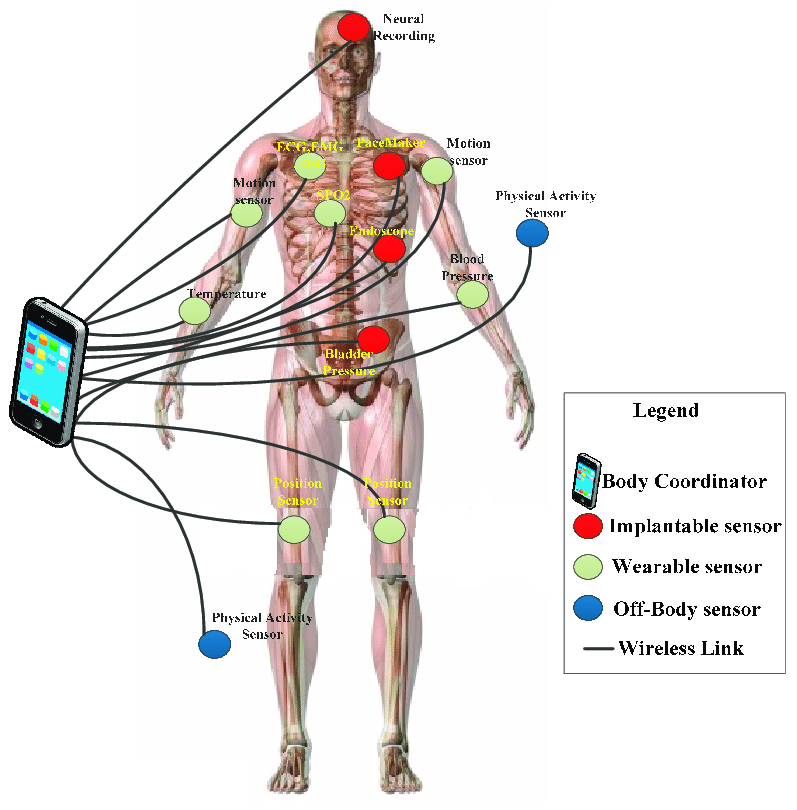

M Chakreesh
A significant healthcare challenge arises when an individual suffers from both pre-existing heart condition like arrythmia and paralysis from the hip. This combination of health issues presents unique difficulties in monitoring the patient's vital signs, managing their mobility limitations, and ensuring timely medical intervention in case of emergencies. Traditional healthcare approaches may struggle to provide comprehensive care and monitoring for such individuals, leading to gaps in their treatment and increased risk of adverse health events. An Iot Based system can be designed to overcome all these Limitations.
Architecture of Wearable device in Home Rehablitation
The architecture of a wearable device for home rehabilitation typically involves several components working together to facilitate effective rehabilitation exercises and monitor progress.
- Sensors: The wearable device incorporates various sensors to capture movement data, such as accelerometers, gyroscopes, and sometimes force sensors. These sensors track the user's movements during rehabilitation exercises.
- Microcontroller: A microcontroller processes the data collected from the sensors in real-time. It may perform initial data processing tasks and manage communication with other components of the system.
- Communication Module: The wearable device includes a communication module, such as Bluetooth or Wi-Fi, to transmit data wirelessly to a companion app or a centralized system for analysis and monitoring.
- Companion App or Software: A companion mobile app or software platform receives the data transmitted by the wearable device. It provides a user interface for performing rehabilitation exercises, visualizing progress, and receiving feedback.
- Data Analysis and Feedback System: The companion app or software analyzes the movement data collected by the wearable device. It may use algorithms to assess the user's performance, provide real-time feedback on exercise technique, and track progress over time.
- Cloud Storage: data collected by the wearable device may be stored securely in the cloud for long-term analysis and access from multiple devices. Cloud storage enables remote monitoring by healthcare professionals and facilitates personalized rehabilitation programs.
- User Interface: The wearable device may have a simple user interface, such as LED indicators or a small display, to provide feedback to the user during rehabilitation exercises.
- Battery and Power Management: To ensure continuous operation, the wearable device includes a battery and power management system to optimize power consumption and extend battery life.



Wearables connected to Real Time Patient Health Monitoring System
For a patient paralyzed from the hips and experiencing arrhythmia, connecting various wearables to a Patient Monitoring System (PMS) can significantly enhance their rehabilitation and overall health management.
- Fall Detector: Helps prevent injuries by alerting caregivers or emergency services in case of a fall, reducing the risk of further complications for a patient with limited mobility.
- Smart Pacemaker: Provides immediate intervention in the event of irregular heart rhythms, such as arrhythmia, by delivering a shock to restore normal heart rhythm, potentially preventing cardiac arrest.
- Smart Knee Brace: Supports rehabilitation exercises for leg muscles, assisting in strengthening and mobility training for the paralyzed lower limbs.
- Smart Leg Brace (Dorsiflexion-Assisted Gait): Aids in gait training by providing support and assistance with foot movement, promoting proper walking mechanics and improving mobility for individuals with lower limb paralysis.
- Smart Wheelchair: Monitors vital signs, including heart rate and oxygen saturation, while offering obstacle detection, GPS navigation, and joystick control. This comprehensive functionality enhances mobility, safety, and independence for patients with mobility impairments.
- Wireless Blood Pressure Monitor: Tracks blood pressure trends and alerts healthcare providers to any fluctuations, allowing for timely intervention and management of cardiovascular health, especially important for patients with arrhythmia.
- Oxygen Saturation Sensor: Monitors oxygen levels in the blood, ensuring adequate oxygenation, particularly during physical activity or sleep, which is crucial for overall health and well-being.
- Respiration Sensor: Tracks respiratory rate and patterns, providing insights into lung function and respiratory health, aiding in early detection of respiratory complications and optimizing respiratory support as needed.
- Wireless Temperature Sensor: Monitors body temperature variations, helping to identify signs of infection or other medical issues that may require prompt medical attention, especially important for patients with limited mobility.
Challenges of IoT based Healthcare System
- Data Security: Ensuring the security and privacy of sensitive health data collected by IoT devices.
- Interoperability: Integrating diverse sensors and devices into a cohesive system.
- Data Quality: Ensuring accuracy and reliability of sensor measurements.
- Scalability: Handling the growing volume of data and devices as the system expands.
- Battery Life: Managing battery life and power consumption of IoT devices.
- Regulatory Compliance: Meeting regulatory requirements for data privacy and patient safety.
- User Engagement: Promoting acceptance and engagement with the system among patients.
- Cost Management: Balancing costs while maintaining system effectiveness and reliability.
Fog computing framework in home rehabilitation
Fog computing can be used in patient health monitoring by enabling real-time data analysis, minimizing latency, enhancing privacy, and optimizing patient care.
IoT devices performance based on Hard, Firm and Soft real time conditions
1. Hard Real-Time: IoT devices must meet strict deadlines without exception, as missing them could have catastrophic consequences. Devices like Smart Pacemaker, Respiration Sensor, Wireless Blood Pressure Monitoring Device are examples of the same.
2. Firm Real-Time: While meeting deadlines is critical, occasional delays may be tolerable without severe repercussions. Temperature Sensor,Fall Detector, Smart Leg brace and Smart knee brace are examples for the same.
3. Soft Real-Time: Deadlines are desirable but not mandatory, allowing for occasional delays without significant impact on performance. Example Smart Wheel chair.
Level of IoT deployment in home rehabilitation environment
A level 4 IoT system is deployed for patient health monitoring, comprising multiple nodes distributed across various locations. These nodes perform local analysis of patient health data collected from wearable sensors. The data is transmitted to the cloud and stored in a centralized database. Observer nodes, both local and cloud-based, subscribe to this data and can process it for various applications. However, these observer nodes do not have control functions. This level 4 IoT system is ideal for healthcare solutions requiring extensive data analysis and computational intensity.
Empowering Patients through Smart Home Automation
By incorporating advanced features of home automation, patients can experience improved comfort, accessibility, and independence in their daily lives, contributing to a higher quality of life and enhanced overall well-being.
Level 1 Iot can be used for home automation
This system consists of the single node that allows controlling the lights and appliances in your home remotely . The device used in this system interface with their lights and appliances using electronic relay switches.
The status information of each light or appliance is maintained in a local database. REST service deployed locally Allow retrieving and updating the state of the each light or appliances in the status database.
The controller service continuously monitor the state of each light or appliance and triggers the relay switches accordingly. The applications which is deployed locally has a user interface for controlling the lights or appliances. since the device is connected to the internet, the application can be accessed remotely as well